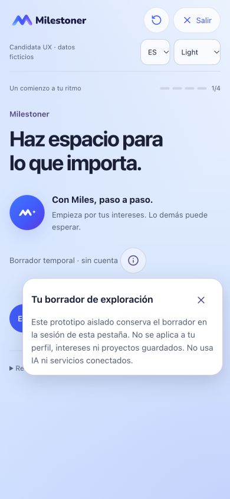

PENDING OWNER VISUAL AND FUNCTIONAL REVIEW. Menos explicaciones repetidas, ayuda accesible junto a su contexto y límites de confirmación visibles. Publicar esta candidata no constituye aceptación UX ni nativa.
Antes: baseline f2038fe, capturada del preview antes de editar. Después: candidata V2.6.1b. Cada par usa el mismo estado de ejemplo, idioma, apariencia y viewport. Cuenta se muestra a página completa para comparar sus tres estados y los avisos de confirmación.
Abre los círculos de información con clic, toque, Enter o Espacio; cierra con Escape, el botón de cierre o una interacción exterior. Sólo una ayuda puede estar abierta. No hay IA, OAuth ni Sync reales. La app normal, el borrador temporal de onboarding y la simulación de Cuenta conservan alcances distintos.
Los enlaces de onboarding retoman el borrador de tu pestaña. Los presets de Cuenta reinician sólo su simulación al recargar; el escenario se identifica en sus controles de revisión. Para ver el consentimiento, abre el escenario sin asociación y pulsa “Preparar asociación”. Nada se asocia ni crea al abrir una ayuda.
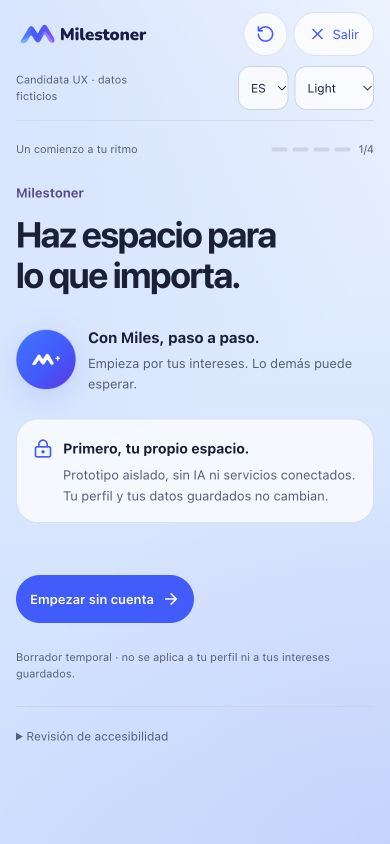
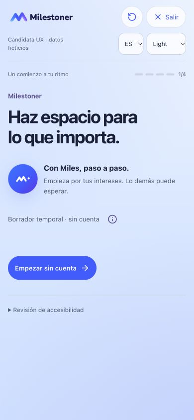
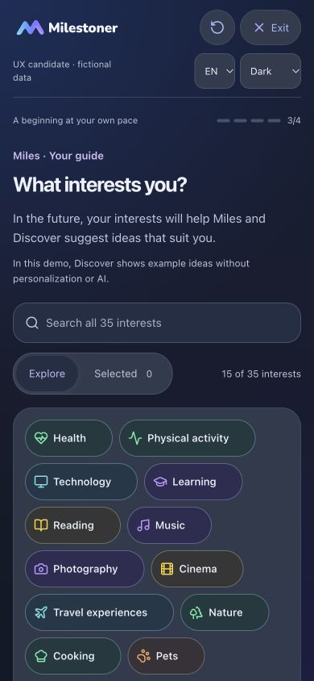
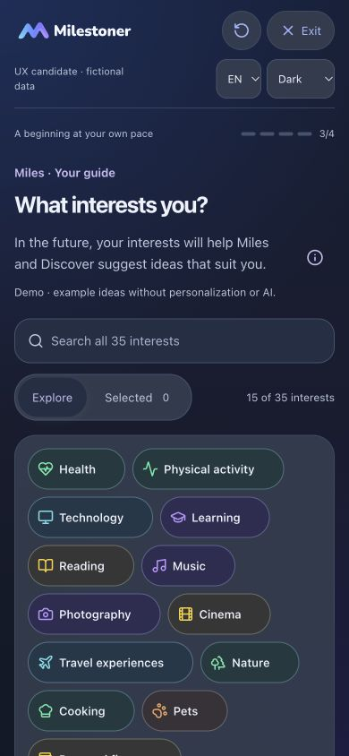
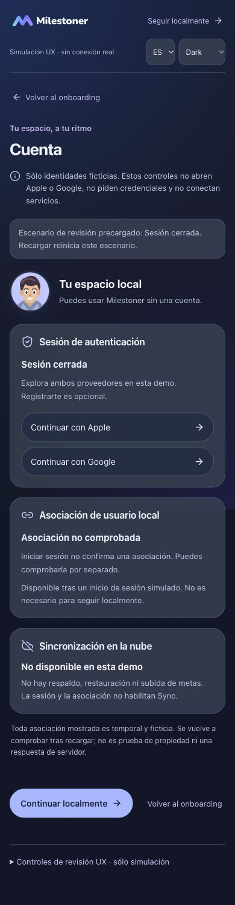
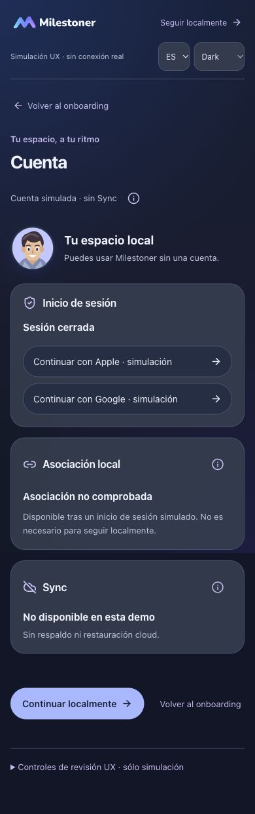
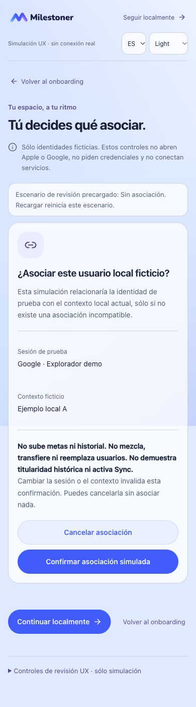
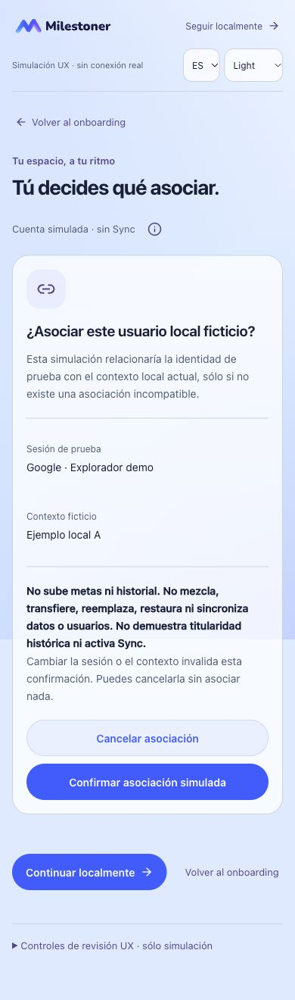
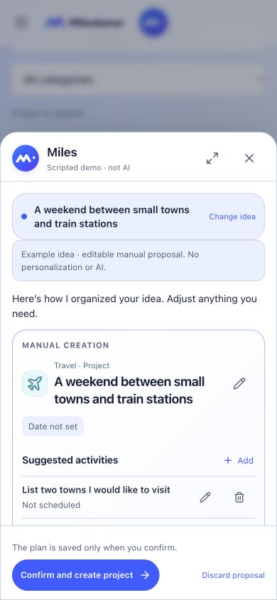
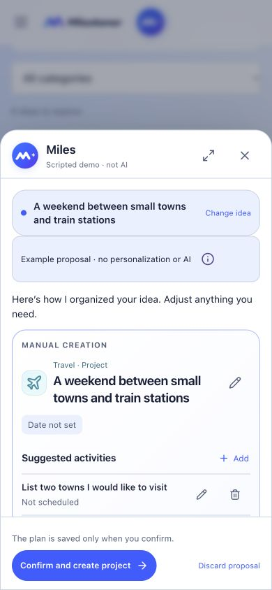
Antes, esta explicación ocupaba espacio permanente en Welcome. Ahora se consulta sin cambiar el borrador ni la navegación. No había un popover equivalente en la baseline.

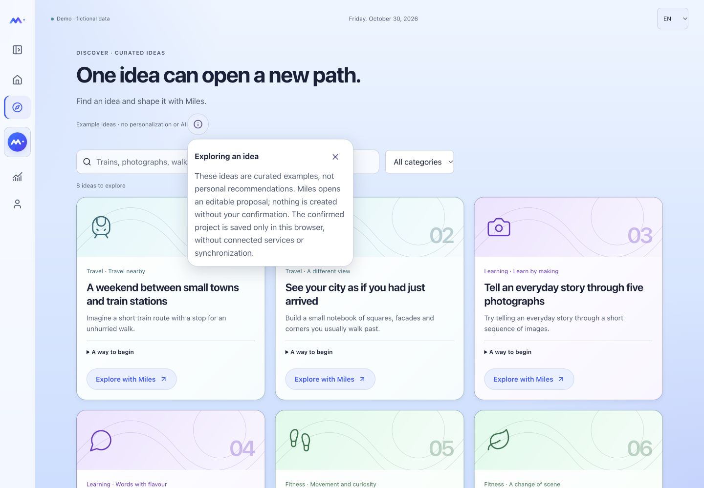
La propuesta Miles se abre desde la primera idea de Discover, “A weekend between small towns and train stations”, con Explore with Miles. Se mantiene editable y sin crear. La frontera temporal de la primera intención y todas las consecuencias de asociación permanecen visibles antes de confirmar.
Diferido: compactación de Profile/Badges (V2.6.1c), accesibilidad y recuperación ajenas a este componente (V2.6.1d), integración nativa y servicios reales. Home, geometría del Universo, modelos, guardas, registros y contratos de almacenamiento no cambian. Los originales privados siguen fuera del repositorio.